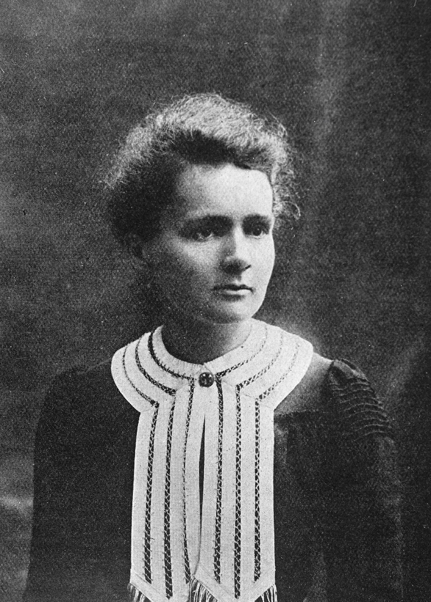
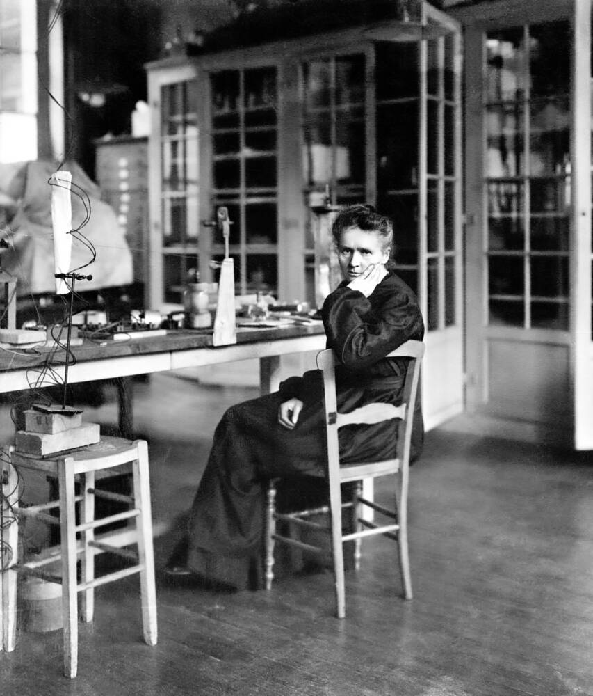
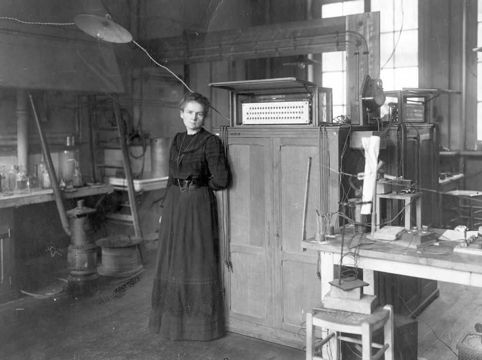
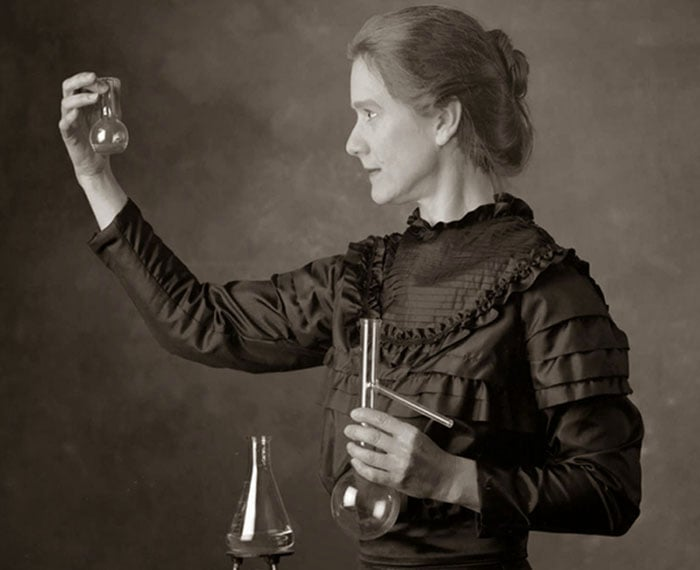
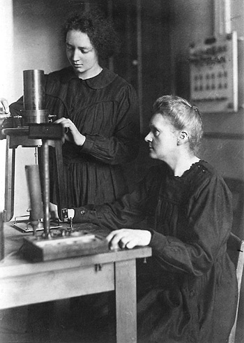
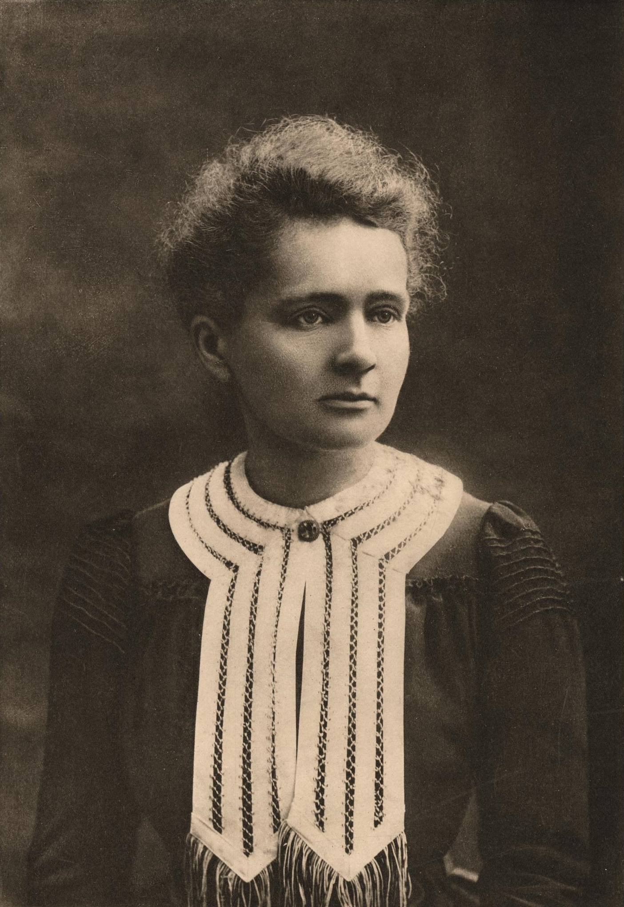

1867 – 1934 · Física & Química
A mulher que iluminou o mundo com a luz da ciência.
Descobrir sua históriaNascida Maria Salomea Skłodowska em 7 de novembro de 1867, em Varsóvia, na Polônia, Marie Curie cresceu em uma família intelectual em meio à opressão do domínio russo. Desde jovem, demonstrou brilhantismo excepcional nas ciências, mas as portas das universidades polonesas estavam fechadas para as mulheres.
Em 1891, com 24 anos, mudou-se para Paris para estudar na Universidade de Sorbonne. Vivendo em extrema pobreza, muitas vezes passando fome e frio, ela se tornou a primeira mulher a se formar em Física pela Sorbonne em 1893, e em Matemática em 1894.
Junto ao marido Pierre Curie, Marie descobriu dois novos elementos químicos: o Polônio (nomeado em homenagem à sua pátria) e o Rádio, em 1898. Ela cunhou o termo "radioatividade" para descrever a emissão espontânea de radiação por certos elementos, revolucionando a física e a química modernas.
Em 1903, recebeu o Prêmio Nobel de Física — tornando-se a primeira mulher na história a ganhar um Nobel. Em 1911, conquistou seu segundo Nobel, desta vez em Química, tornando-se a única pessoa até hoje a vencer o prêmio em duas áreas científicas distintas.

O Rádio (Ra) é o elemento de número atômico 88 na tabela periódica, descoberto por Marie e Pierre Curie em 1898 a partir da pechblenda.
O Rádio emite uma luz esverdeada característica no escuro. Marie Curie guardava amostras em seu laboratório e as descrevia como "pequenas luzes fadas" — sem saber que a radiação estava destruindo sua saúde.
A descoberta do Rádio abriu caminho para a radioterapia no tratamento do câncer. Durante a Primeira Guerra Mundial, Marie criou unidades móveis de raio-X — as "petites Curies" — salvando milhares de vidas.

Maria Skłodowska nasce em Varsóvia, Polônia, em 7 de novembro.
Muda-se para Paris e ingressa na Universidade de Sorbonne, enfrentando pobreza extrema.
Casa-se com o físico Pierre Curie, iniciando uma das maiores parcerias científicas da história.
Descobre os elementos Polônio e Rádio. Cria o termo "radioatividade".
Recebe o Prêmio Nobel de Física, tornando-se a primeira mulher a ganhar o prêmio.
Pierre morre em um acidente. Marie assume sua cátedra na Sorbonne, tornando-se a primeira professora mulher da instituição.
Conquista o segundo Nobel, em Química — feito inédito na história dos prêmios.
Cria unidades móveis de raio-X para a Primeira Guerra Mundial, salvando inúmeras vidas nos campos de batalha.
Falece em 4 de julho de 1934, vítima de anemia aplástica causada pela exposição à radiação. Seu legado transforma para sempre a ciência.
Clique em qualquer quadro para adicionar sua imagem.



Fundou o campo da física nuclear moderna. Seus estudos sobre radioatividade abriram caminho para a física atômica e a medicina nuclear.
A radioterapia, usada hoje para tratar milhões de pacientes com câncer, tem raízes diretas nas descobertas de Marie Curie sobre o Rádio.
Provou que o gênero não limita o gênio. Abriu portas para gerações de mulheres nas ciências, sendo símbolo eterno de perseverança e inteligência.
Fundou o Instituto Curie em Paris (1920), ainda hoje um dos principais centros de pesquisa oncológica do mundo, e o Instituto do Rádio em Varsóvia.
O elemento 96 da tabela periódica, o Cúrio (Cm), foi nomeado em sua homenagem. Sua imagem estampou notas de dinheiro polonesas e francesas.